PHENO
Growing your own vegetables is very easy! PHENO.GARDEN provides you with as few information as necessary to plant 10 different sorts of vegetables. It helps you to keep track of your garden with a calendar overview which will guide you through the seasons.
{{ PLANTS[0].NAME }}
Prepare the planting bed by mixing in compost. Although it prefers full sun, spinach will still grow well in partial shade. Sow seeds 1 cm deep and 5 cm apart, in rows spaced 30 cm apart. As the plants grow, gradually thin them so the leaves of neighbouring plants barely overlap. To provide a constant harvest pinch off individual leaves, leaving the central rosette intact. As soon as you notice the plant to develop a tall central stem remove it to prevent it from bolting.
{{ PLANTS[1].NAME }}
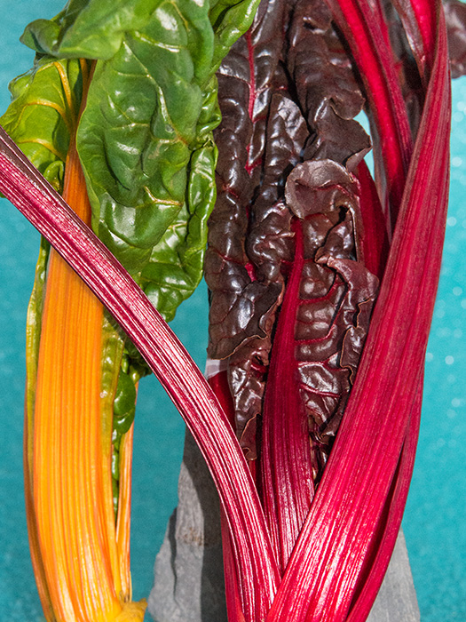
Before planting mix fertilizer into the soil. Plant the seeds 3 cm deep. Space the seeds about 10 cm apart in rows with a distance of about 45 cm. When the plants are 8 cm tall, thin them out so that they are 30 cm apart. Water often during dry spells. You can start harvesting when the plants are 20 cm tall. If you only cut off the outer leaves carefully, new leaves will grow and provide another harvest. Know that you can also grow chard in pots.
{{ PLANTS[2].NAME }}
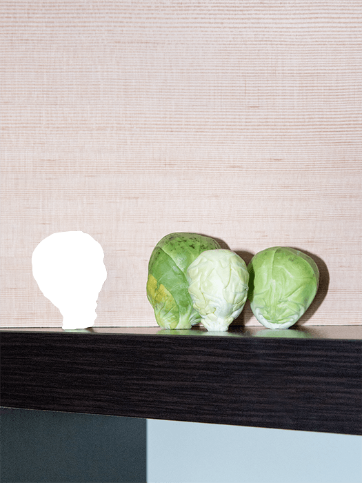
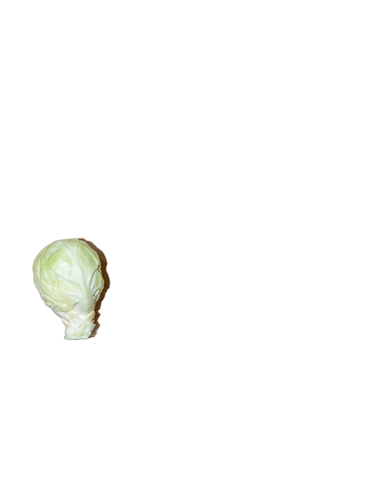
Plant the seeds in pots and keep them indoor. When the young plants have seven true leaves, transplant to their growing positions, leaving 60cm between plants. Choose a sheltered, sunny site and add fertiliser before planting. Fertilise again at end of summer. Water every 10-14 days in periods of dry weather. Remove yellow and diseased leaves right away and start harvesting the lowest sprouts. In September mound soil around the base to support the plants.
{{ PLANTS[3].NAME }}
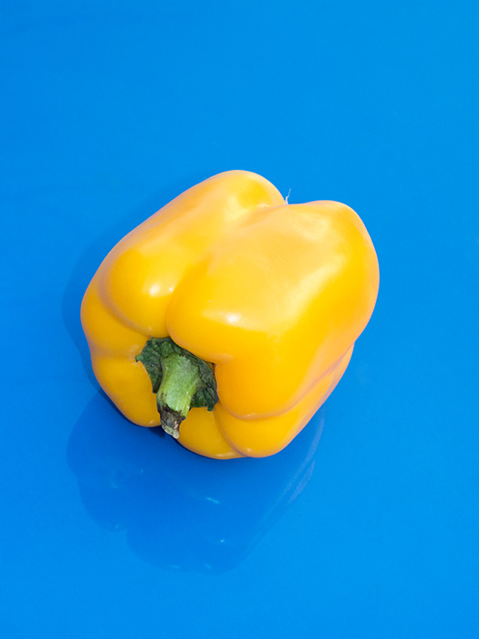
Plant the seeds about 1 cm deep in small pots an keep them indoor. Separate the seedlings and plant into bigger pots when two true leaves have formed. Prior to transplanting work fertilizer into the soil. The plants should have a distance of around 45 cm between each other. For support, tie the plants to stakes. The growing spot should receive a lot of sun. Keep the soil moist but don’t overwater.
{{ PLANTS[4].NAME }}
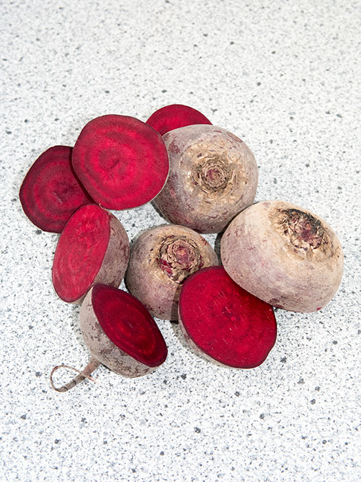
Sow the seeds outside at a medium shade spot. Prepare the soil by fertilizing and loosening it. Plant the seeds about 1 cm deep in rows with about 20 cm distance to each other. Water daily until sprouting. When the seedlings are about 3 cm high thin out to leave one seedling per 10 cm station. In dry periods water every 10 to 14 days. Know that you can also grow beetroot in pots.
{{ PLANTS[5].NAME }}
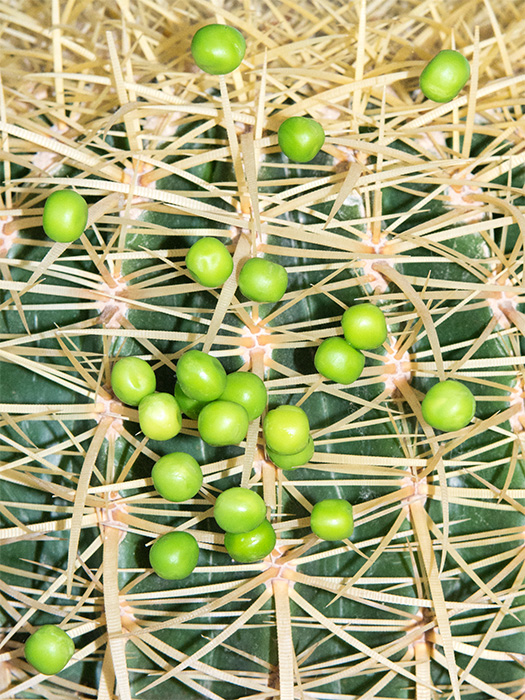 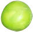
Prepare by loosening the soil while mixing in compost. Poke seeds into the prepared site 5 cm apart and 3 cm deep. Rows should be 40 cm distanced. As soon as the plants grow tendrils stick a highly branched limb into the soil beside each plant to use it as a growth support. During blossom and growing husks the plants need a lot of water.
{{ PLANTS[6].NAME }}
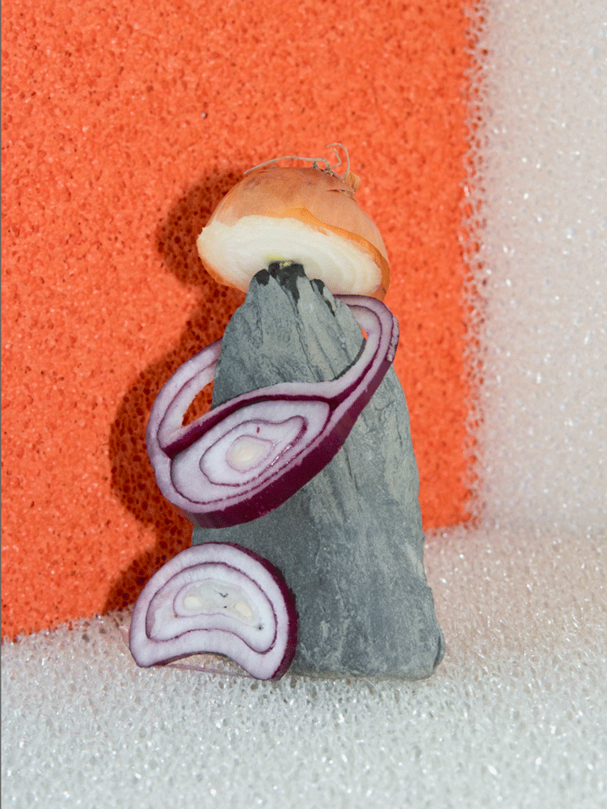
Select a location with full sun and mix some nitrogen fertilizer into the soil. The best way is to grow onions from sets. Plant the sets 3 cm deep, with 12 cm between each plant and in rows 40 cm apart. Keep the soil consistently moist and side dress every few weeks with fertilizer until the onions push the soil away and the bulbing process has started. Do not put the soil back around the onions.
{{ PLANTS[7].NAME }}
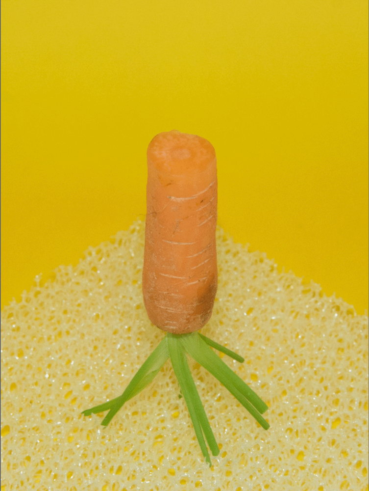
Choose a sunny spot and make sure the soil is free of stones. Plant seeds 2 cm deep in rows. Rows should be at least 15 cm apart. Once plants are about 3 cm tall, thin so they stand 7 cm apart. Fertilize 5-6 weeks after sowing. Don’t let the plants dry out.
{{ PLANTS[8].NAME }}
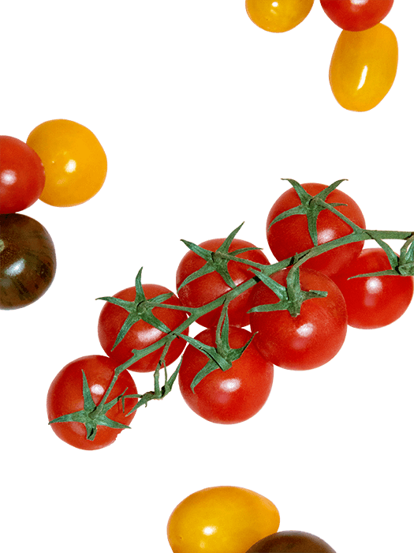
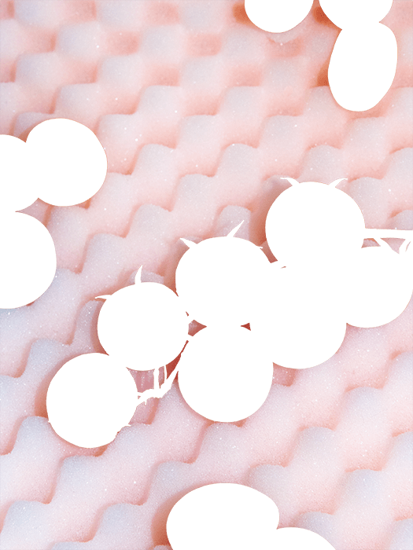
Plant the seeds about 2 cm deep in small pots and keep them indoor. Plant out as soon as the seedling growth four leaves. The plants should have a distance of 40 cm between each other. The growing spot should receive a lot of sun. Keep the soil moist but don’t overwater. As a growth support tie the stem to a stake. Pinch off lateral shoots early on. Remove the main shoot around the middle of September. Fertilize from time to time.
{{ PLANTS[9].NAME }}

Cut the sweet potato in half and place each in a glass of water with half of the potato below the water and half above. You can use toothpicks to hold the potato in place. When the potato is covered with sprouts that have around 4 leaves separate them by twisting it off of the sweet potato. Put the slips in a vase with water, after a few days they will grow roots. Plant the slips about 30 cm apart and allow 75 cm between rows. Sweet potatoes need loose soil and a lot of sun. When leaves and shoots are turning yellow you can harvest.